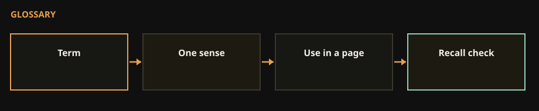
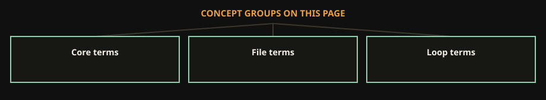

Glossary
Plain terms at first use across the site. One term, one sense, in all pages.

| Term | Sense in this site |
|---|---|
| Agent | A model plus tools, state and a loop, run toward a goal. |
| AGENTS.md | An instruction file for Codex and Muse Code. Acts as a repo map. |
| Artifact | A review ready output form in Antigravity: a plan, a task list, a screenshot or a record. |
| CLAUDE.md | An instruction file for Claude Code. Acts as team memory and a map. |
| Context | All text and data a model can see in one run. |
| Duet | An Anthropic proactive personal agent in research preview from 21 October 2026. |
| dots | An OpenAI always on personal agent from 29 September 2026. |
| Eval set | A fixed set of samples with scores, run on each prompt or model change. |
| Grok Bot | An xAI fleet of named bots on one shared cloud computer. |
| Harness | All scaffold parts round a model: context, tools, skills, policy and evals. |
| Hook | A firm code act on a life cycle event. A hook can deny a tool call. |
| MCP | Model Context Protocol. A standard form for tool servers for agents. |
| Oracle | A firm pass test an agent cannot edit. |
| Skill | A folder with a SKILL.md file. Holds a repeat procedure for an agent. |
| Stop condition | A firm rule that ends a loop: a pass, a round cap or a cost cap. |
| Subagent | A child agent with own context. Only a final message returns to a lead. |
| Worktree | A git checkout form that isolates one task branch in own files. |

Visual map of this page
Three views of one page: a Mermaid flow for work order, a markmap for concept groups, and a read guide for the flow.
flowchart LR
A[New term] --> B[One sense in glossary]
B --> C[Same sense on all pages]
C --> D[Recall question]
Mermaid source, for offline read
flowchart LR A[New term] --> B[One sense in glossary] B --> C[Same sense on all pages] C --> D[Recall question]
How to read the flow diagram. Step 1: start at the left box. Step 2: follow each arrow to the next stage. Step 3: at a branch box, read both paths before a choice. Step 4: a loop arrow means work returns for one more pass vs a test.
Markmap: concepts on this page
- Glossary
- Core terms
- Agent
- Harness
- Oracle
- Skill
- File terms
- CLAUDE.md
- AGENTS.md
- SKILL.md
- Loop terms
- Stop condition
- Subagent
- Worktree
- Core terms